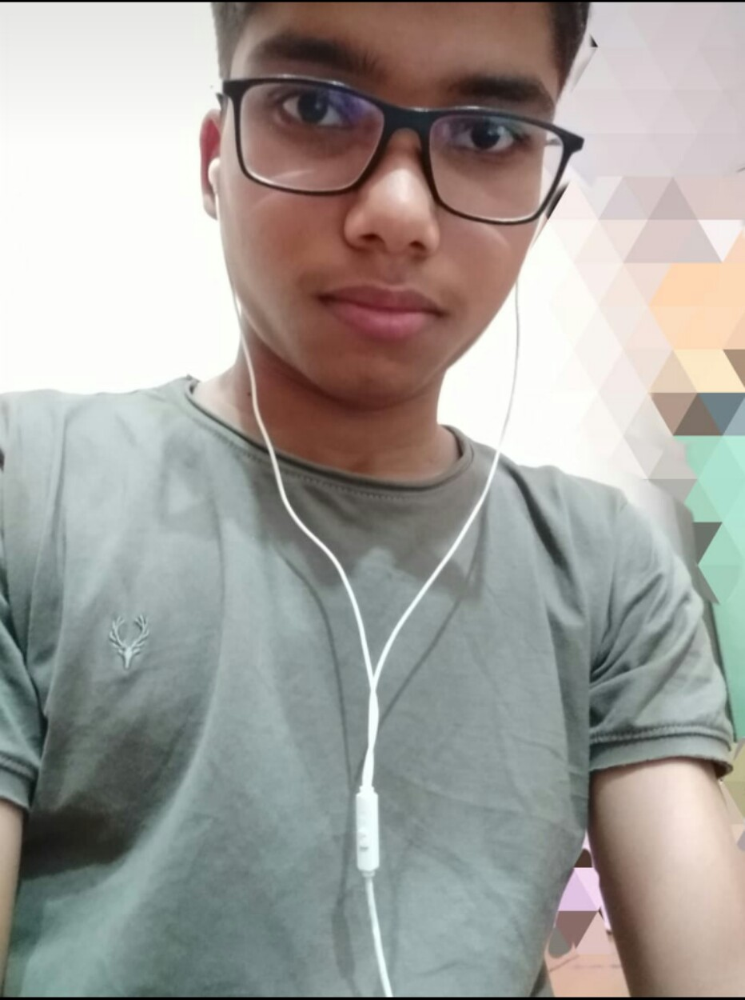

~Shourya Singh
जो दिल के हो करीब उसे रुसवा नहीं करते, यूँ अपनी दोस्ती का तमाशा नहीं करते, खामोश रहोगे तो घुटन और बढ़ेगी, अपनों से कोई बात छुपाया नहीं करते.हर पल की दोस्ती का इरादा है आपसे, अपनापन ही कुछ ज्यादा है आपसे, साथ रहेंगे आपके उम्र भर के लिए, हमेशा दोस्ती निभाएंगे वादा है आपसे. ना तुम दूर जाना ना हम दूर जायेंगे, अपने-अपने हिस्से की दोस्ती निभाएंगे.

नमस्कार दोस्तों, फ्रेंड्स तो सबके होते है, मेरे भी है और आपके भी होंगे। परन्तु एक अच्छा और सच्चा मित्र किस्मत वालों को ही मिलता है।।दोस्ती का रिश्ता इस दुनिया का एक ऐसा रिश्ता होता है जो कि खून का नहीं होता। यह सिर्फ़ विश्वास पर टिका होता है, आंख बंद करके भी दोस्तों पर भरोसा किया जा सकता है।दोस्त ही हमारे जीवन में ऐसे होते हैं, जिनको हम अपने मन से चुनते है। दोस्त ही होता है जो हमें अपने निराशाजनक जीवन से दूर ले जाकर ढेर सारी खुशियाँ देता है। हमारे हर सुख और दुःख में अपनी हर सहभागिता निभाता है।कितने अजीब है ना ये रिश्ते, जो किस्मत से मिलते हैं। अपनी यारी को जन्नत बना जाते हैं, दोस्त मिले तो अन्जाने में, कोई मस्ती वाला यार बन गया, कोई हॉस्टल की टोली में मिल गया, कुछ नोट्स वाले दोस्त मिले, कोई चाय की चुश्कियों के साथ दिल गये। कईयों ने साथ में गलियां भी खाई और कईयों ने खिलवाई भी। पर दोस्ती हर एक ने क्या ख़ूब निभाई, दोस्तों के नाम पर सारे भुक्कड़ ही मिले, एक टिफिन में पूरी टोली ने लूट मचाई। और चाय के शौकीन तो हम बराबर के निकले, फिर क्या सब के हाथ में चाय और सबकी टांग खिंचाई। धीरे-धीरे दोस्ती और गहराई, अपने नये रंग लाई, कुछ बेस्ट फ्रेंड बने और कुछ सीक्रेट पार्टनर। कुछ के दिल मिल गये और कहीं रक्षा सूत्र बंध गये। अब एक दौर गलतफहमियों का भी आया, कभी रोना कभी मनाना, कभी रूठना कभी समझाना अपनी यादों में एक हिस्सा यह भी बनाया। अब जो वक्त था बिछड़ने का, वो फिर सबको साथ ले आया।नम आँखे और दिल में इतनी सारी यादें लिए, जाते वक्त फिर मिलने के वादे दिए हर कोई अपनी राहों में बढ़ गया, आज कोई पास तो नहीं मगर सब साथ है। मिलते आज भी हैं सब, दोस्ती की यही तो बात है, ये महज एक कहानी नहीं, ये मेरी दोस्ती की दास्तान है।
Shourya Singh.